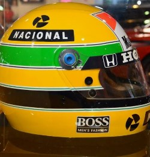

COLEÇÃO OFICIAL • F1
PADDOCK COLLECTION
VELOCIDADE • ESTRATÉGIA • GLÓRIA


FÓRMULA 1: PADDOCK COLLECTION
Uma coleção digital exclusiva dedicada à paixão, à engenharia e aos momentos inesquecíveis
da Fórmula 1. Dos mitos eternos aos estrategistas dos bastidores, esta obra reúne os 30
maiores ícones que moldaram a história do automobilismo mundial.